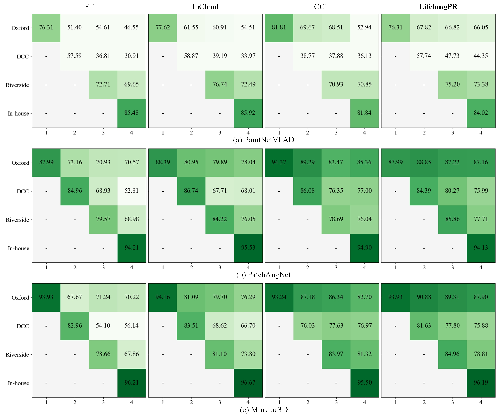
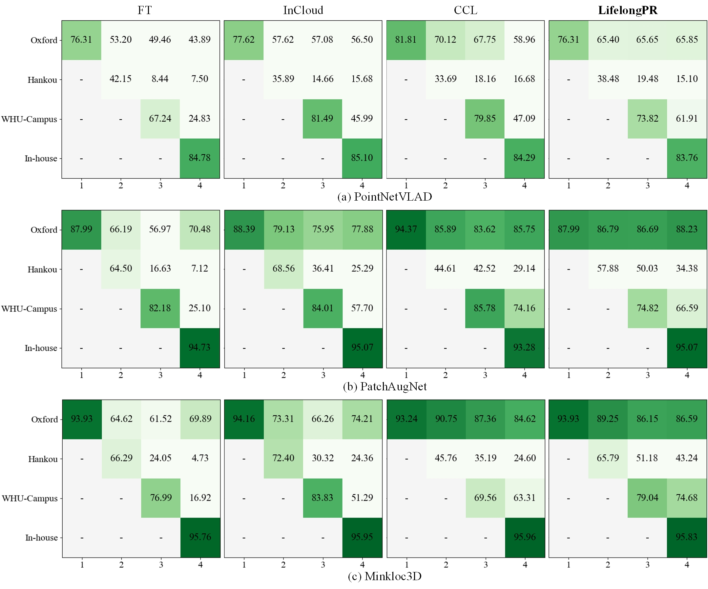
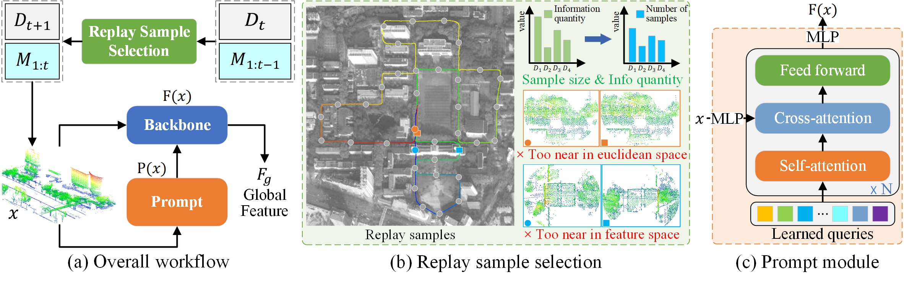

Compare to baselines




Point cloud place recognition (PCPR) is a fundamental task in robotics and computer vision in the fields of autonomous driving, intelligent transportation, and augmented reality. To cope with the dynamic changes in scenarios and sensor types, PCPR models need to incrementally acquire, update, and accumulate knowledge for continuous evolution‚Äîan ability known as continual learning (CL). However, due to the dynamic distributions of incrementally acquired point cloud data, PCPR models often forget previous knowledge when acquiring new knowledge, i.e. catastrophic forgetting. To address this issue, this study proposes a novel CL method tailored for PCPR, which effectively extracts and fuses knowledge learned by the model across sequential point cloud data. First, a replay sample selection method is proposed, dynamically allocating a replay sample size to each training set based on information quantity and selecting replay samples based on spatial distribution. Second, a new CL framework composed of a prompt module and the two-stage training strategy is proposed, and the domain-specific knowledge captured from each training set by the prompt module is used for guiding the backbone network to extract features adapted to individual samples. Comprehensive experiments on large-scale public and self-collected datasets are conducted to validate the effectiveness of the proposed method. Compared with state-of-the-art (SOTA) methods, our method achieves 6.50% improvement in ùëöùêºùëÖ@1, 7.96% improvement in ùëöùëÖ@1, and an 8.95% reduction in ùêπ.

@article{zou2025lifelongpr,
title={LifelongPR: Lifelong knowledge fusion for point cloud place recognition based on replay and prompt learning},
author={Zou, Xianghong and Li, Jianping and Chen, Zhe and Cao, Zhen and Dong, Zhen and Qiegen, Liu and Yang, Bisheng},
journal={Information Fusion},
volume={xxx},
pages={xxx--xxx},
year={2025}
publisher={Elsevier}
}
Acknowledgements: We borrow this template from FreeReg.